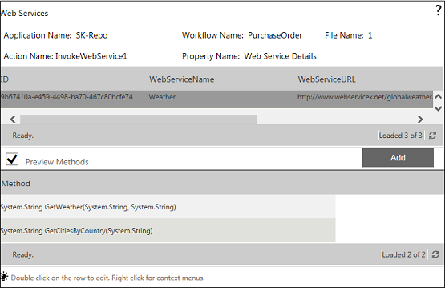
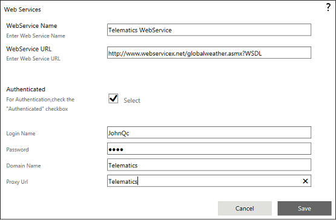
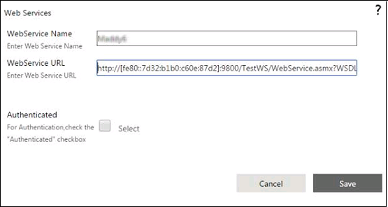
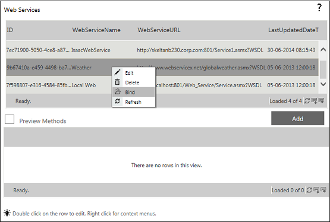
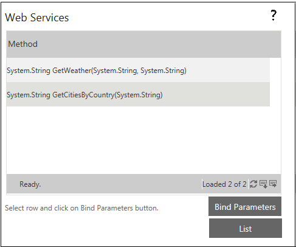

No
You can manage Web Services from the Web Service Details window.
The Web Service Details window lists all the web services configured for the application or workflow. The upper section of the window shows the web service details. The lower section of the window shows a preview of the methods of the selected web service if this provision is enabled.
The Web Service Details window has the following controls:
The following image shows the Web Service Details window with the Preview Methods enabled:

Adding a Web Service
The window to add a web service appears.
For example: localhost/SkeltaWebService/WorkfllowClient.asmx?wsdl
You can also enter an IPv6 address for the WebService URL. The IPv6 address must be enclosed within square brackets.
Enter the following information:
The following image shows a sample window for adding a web service:

The following image shows a sample window for adding a web service when the WebService URL is an IPv6 address:

Binding a Web Service
The context menu shows Edit, Delete, Bind, and Refresh options.

The Methods list of the web service appears in a new dialog box. This window also displays the Public Fields List window in case there are public fields in the selected web service.

A dialog box appears that shows the details of the parameters of the selected method.
You can click on the List button to return to the Web Services List page.
The Create XML Variable dialog box appears.
Note: If the web method returns multi-level complex object, then create the XML variable in Start Activity using a sample XML schema returned by the web method. Then select this variable in the Invoke Web Service activity.